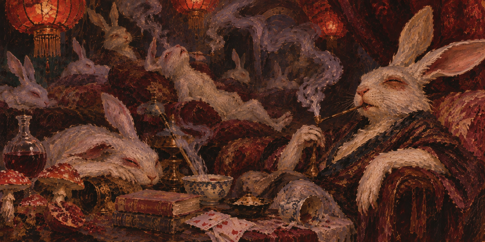

Find your next
great read.
Explore real reading lists from Oxford, Harvard, MIT, and universities around the world.
Start building a reading list by topic.
Choose a subject, follow its original university sources, and save the works that interest you.
Only subjects represented in the sourced archive are shown. More fields will appear as their reading lists are verified.
Find your rabbit hole.
We’ve collected the anomalies: some of the most unusual, eccentric, and off-the-beaten-path university courses we could find. You can also discover the occasional remarkable reading list found beyond the classroom.

A syllabus worth stealing.
Browse institutional syllabi, lecture schedules, and preparatory lists. Every excerpt leads back to its source.
You don't need to get in to begin.
Follow the established curriculum or disregard the order entirely. Assemble a private education from public intellectual traditions, one assigned work at a time.
Enter the reading room ↗